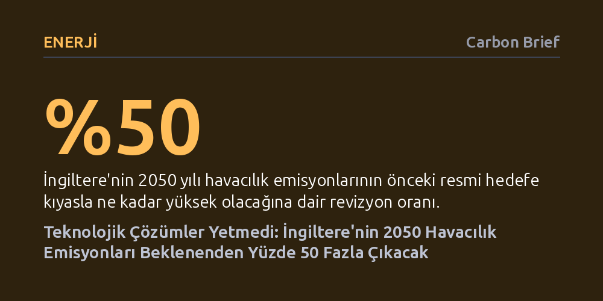

ENERJI · Carbon Brief · 2026-09-11
İngiltere hükümetinin güncellenen projeksiyonları, sürdürülebilir yakıtlar ve elektrikli uçakların yetersiz kalması nedeniyle 2050 havacılık emisyonlarının önceki hedeften yüzde 50 daha yüksek olacağını gösteriyor. Bu durum, Heathrow Havalimanı'nın genişletilmesinin ülkenin yasal net sıfır karbon hedefini tehlikeye atacağını ortaya koyuyor.
Havacılık sektörünün büyümesini dizginlemeden yalnızca teknolojik yeniliklere ve alternatif yakıtlara güvenerek net sıfır emisyona ulaşmanın gerçekçi olmadığını gösteriyor.

İngiltere hükümeti, havacılık sektörünün iklim krizindeki payını küçültmek adına yıllardır öne sürdüğü teknolojik çözümlere dair beklentilerini belirgin şekilde aşağı çekti. Sessizce yayımlanan güncel resmi projeksiyonlar; elektrikli uçaklar, hidrojen sistemleri ve sürdürülebilir havacılık yakıtları gibi çözümlerin önümüzdeki yirmi yıl boyunca uçuş kaynaklı emisyonları yalnızca dörtte bir oranında azaltabileceğini ortaya koyuyor. Bu tablo, 2022 yılında açıklanan ve uçuş sayısını kısmadan net sıfıra ulaşılabileceğini savunan "jet-zero" stratejisine vurulmuş ağır bir darbe niteliğinde.
Yapılan yeni modellemeler, 2050 yılına gelindiğinde Birleşik Krallık semalarındaki uçakların atmosfere 28,1 milyon ton karbondioksit eşdeğeri sera gazı bırakacağını öngörüyor. Bu miktar, önceki hükümetin belirlediği 19,3 milyon tonluk tavan hedefin neredeyse yüzde 50 üzerinde. Mevcut İşçi Partisi hükümeti her ne kadar iklim taahhütlerine bağlı olduğunu savunsa da, son veriler havacılık sektörünün karbonsuzlaşma hızının vaat edilenin çok gerisinde kaldığını resmen belgeliyor.
Emisyon tahminlerinin bu denli yükselmesinin temel nedeni, havacılıkta kurtarıcı gibi sunulan erken aşama teknolojilerin pratik sınırlarına çarpması. Hükümet, 2050'de havacılık yakıtlarının yüzde 50'sini oluşturması beklenen sürdürülebilir havacılık yakıtı (SAF) hedefini yüzde 30'a düşürmek zorunda kaldı. Üstelik analizler, bu yakıtların yaşam döngüsü boyunca sağladığı karbon tasarrufunun başlangıçta varsayılandan çok daha düşük olduğunu gösteriyor. Zira SAF üretiminde kullanılan atık yağ ve biyolojik maddelerin arzı son derece kısıtlı ve bu durum hedeflenen yakıt hacminin tedarikini neredeyse imkânsız kılıyor.
Benzer bir hayal kırıklığı bataryalı ve elektrikli uçaklarda da yaşanıyor. Yeni tahminlere göre, 2035 yılına kadar ticari filolarda yalnızca en küçük sıfır emisyonlu uçakların yer alabileceği, bunların da genel salımları kayda değer biçimde azaltamayacağı kabul ediliyor. Uçak gövdesi ve motor verimliliğindeki yıllık iyileşme beklentisi de Cambridge Üniversitesi Havacılık Etki Hızlandırıcısı'nın (AIA) sunduğu verilerle yıllık yüzde 2'den yüzde 1,3'e indirildi. Uluslararası karbon fiyatlarının beklenenden düşük seyretmesi de temiz teknolojilere geçişin ekonomik zeminini zayıflatıyor.
Raporun en kritik yanı kamuoyuna sunuluş zamanlamasında yatıyor. Londra Heathrow Havalimanı'na tartışmalı üçüncü bir pist eklenmesi planlanırken, hükümet söz konusu genişlemeyi tam da bu temiz teknolojilerin salımları sıfırlayacağı teziyle meşrulaştırıyordu. Oysa güncellenen tahminler, yeni pistlerin devreye girmesiyle yolcu sayısının 2050'ye kadar en az yüzde 50 artacağını ve havacılığın ülkenin yasal karbon bütçesini tek başına tüketeceğini gösteriyor. Havacılık Çevre Federasyonu'nun (AEF) hesaplamaları, Heathrow'un üçüncü pistinden kaynaklanan yıllık salımın 2050'de tek başına 3,5 milyon tona ulaşacağını ve sonrasında katlanarak artacağını ortaya koyuyor.
Manchester Üniversitesi'nden Dr. Lois Pennington'ın vurguladığı gibi, İngiltere henüz üçüncü bir pist inşa edilmeden bile havacılığa ayrılan karbon bütçesini aşma rotasına girmiş durumda. Uçuş talebini dizginlemek yerine havalimanlarını büyütme tercihi, iklim hedeflerine ulaşma yükünü bütünüyle diğer sektörlerin omuzlarına yıkıyor. Bu durum, hükümetin kamuoyuna sunduğu büyüme vizyonu ile bilimsel gerçekler arasındaki derin çelişkiyi görünür kılıyor.
Havacılık sektörünün sebep olduğu bu devasa emisyon fazlası, İngiltere'nin 2050 yılı için yasal olarak bağlayıcı olan net sıfır hedefini doğrudan tehlikeye atıyor. Uçuş salımları beklendiği gibi yüksek kalırsa, açığı kapatmanın geriye yalnızca iki yolu kalıyor: Ya yüz binlerce hektarlık devasa yeni ormanlar dikilerek karbon yutakları oluşturulacak ya da doğrudan havadan karbon yakalama gibi son derece pahalı ve henüz ticari ölçekte kanıtlanmamış teknolojilere bel bağlanacak.
İklim Değişikliği Komitesi (CCC) ve bağımsız uzmanlar, teknolojik mucizelere güvenerek uçuş talebini serbest bırakmanın büyük bir kumar olduğu konusunda uyarıyor. Uzmanlara göre, emisyonları yasal sınırlar içinde tutmanın en rasyonel yolu yolcu sayısındaki artışı doğrudan politika araçlarıyla sınırlandırmaktan geçiyor. Ancak siyasi karar alıcılar havalimanı genişletmelerini onaylayarak, faturayı geleceğin vergi mükelleflerine ve belirsiz teknolojik vaatlere havale etmeyi sürdürüyor.